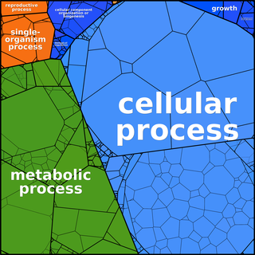
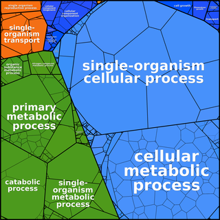
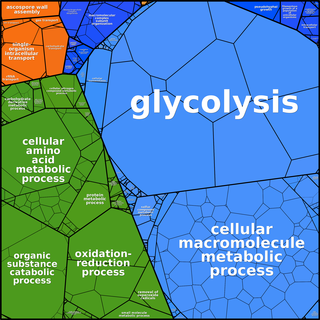
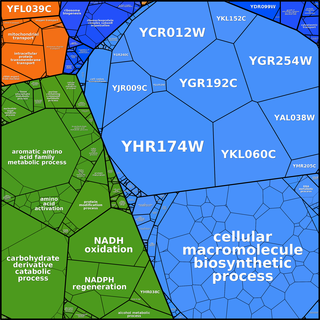

Proteomaps can be created based
on any user-defined hierarchy tree. The following images of
|  |  | |
|  |  |
Ontologies such as GO need to be adapted to form a tree graph. In GO ontologies, many non-terminal nodes are under several more general terms simultaneously. In addition, GO - being a directed acyclic graph rather than a tree - contains terms that are located at different distances from the root. Finally, the dynamic nature of GO contains for some genes more than 10 levels and we find that for proteomaps a more compact 3-level hierarchy is easier to visually comprehend.
Back to Proteomaps home